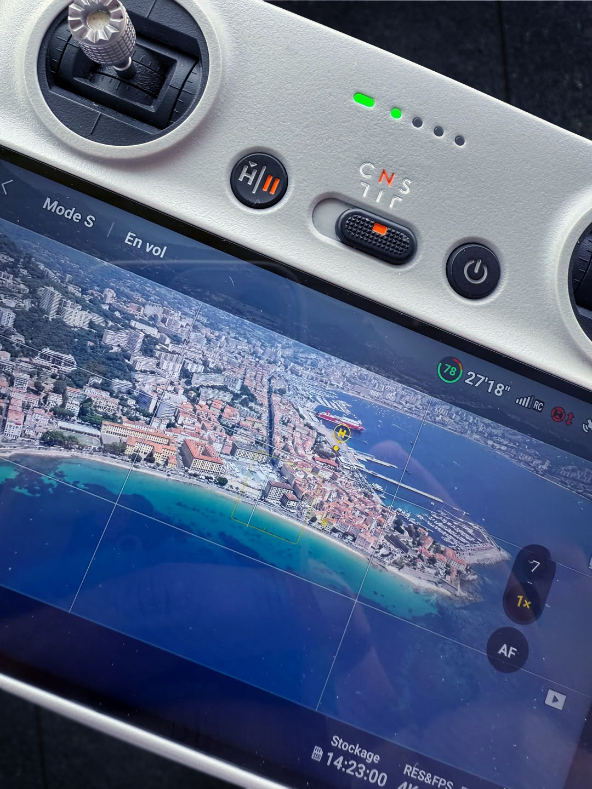
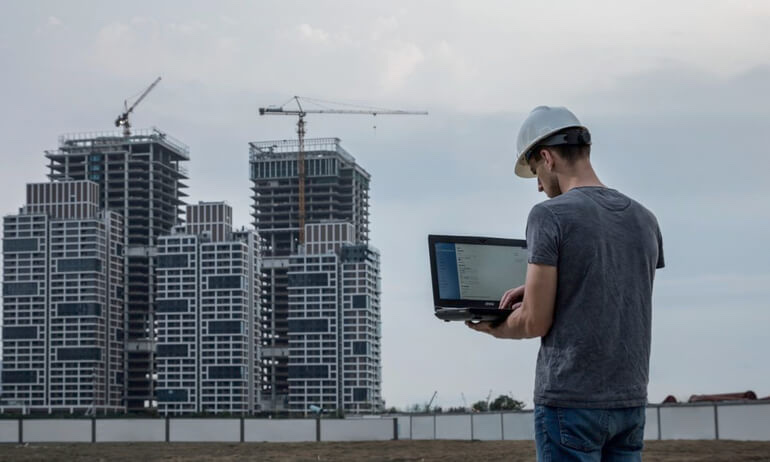
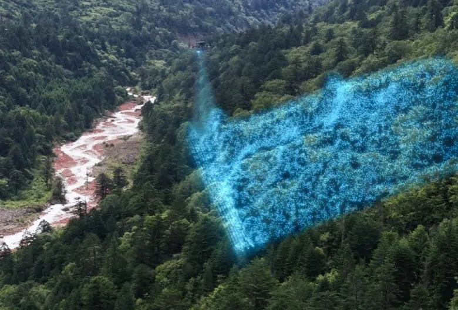
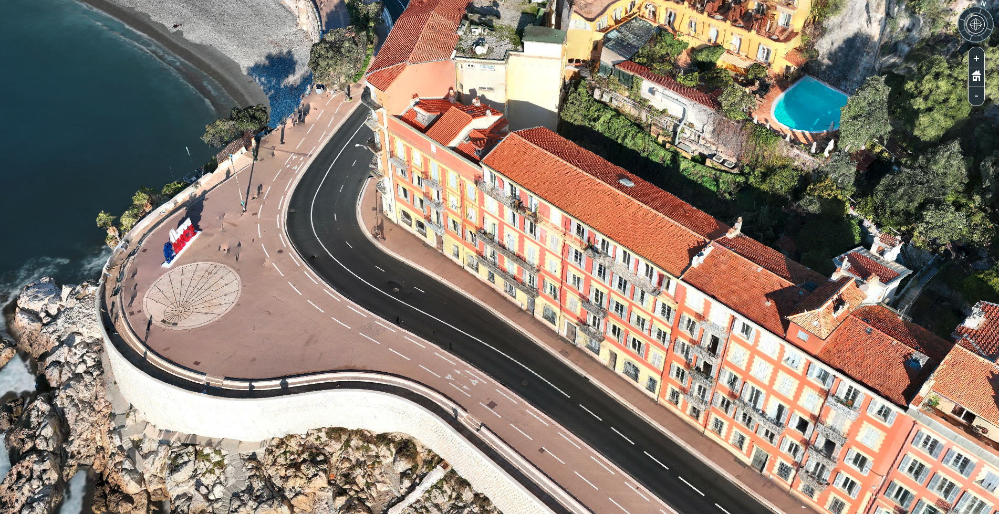
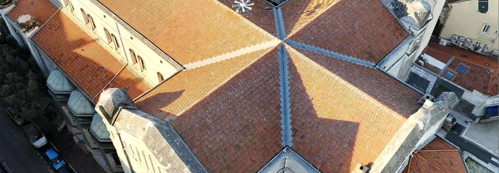
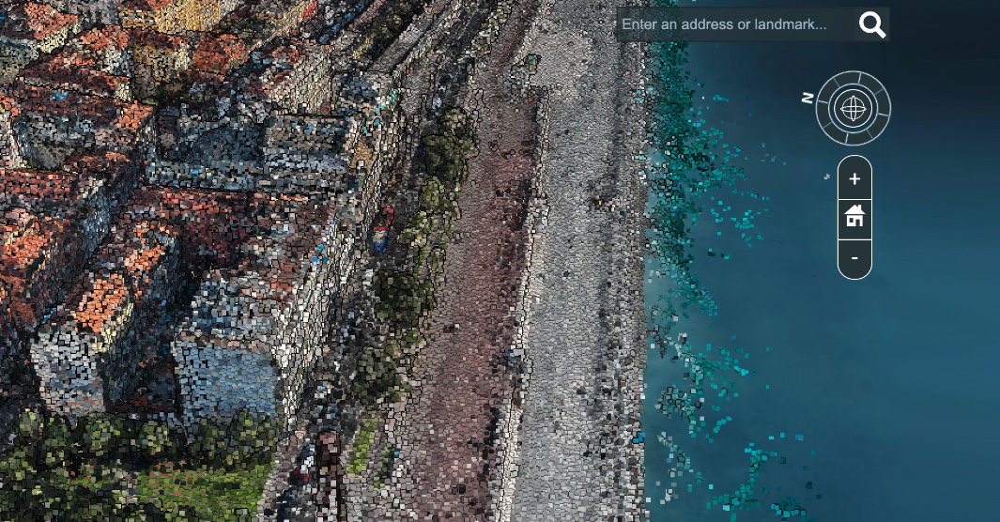

Jumeaux numériques et relevés photogrammétriques par drone, géoréférencés au centimètre — d'un ouvrage d'art à un quartier urbain. Une donnée mesurable, navigable, exploitable. Nice & Côte d'Azur.
Un jumeau numérique, c'est la réplique exacte d'un site, capturée par drone et reconstruite en 3D, géoréférencée au centimètre. Le résultat : des données mesurables, navigables, exploitables — d'un ouvrage d'art à un quartier entier.
Aucun contact, aucune approche risquée : le drone survole le site à hauteur réglementaire et le photographie sous tous les angles. Le modèle 3D est calculé ensuite, intégralement à partir des images.
Vol photogrammétrique RTK, plan de vol croisé, recouvrement 80 % / 80 %. Le drone reste à distance de sécurité des ouvrages.
Des milliers d'images géoréférencées fusionnées en une réplique 3D exacte du site — navigable, mesurable, exportable.

Un fichier 3D fige un instant. Notre vraie force, c'est de livrer une représentation récente — et de la réactualiser. En quelques mois, une ville bouge : travaux, voirie, mobilier urbain, végétation, usages du périmètre. Vous décidez sur le terrain tel qu'il est, pas tel qu'il était.
Le terrain tel qu'il est aujourd'hui — une lecture du présent, pas d'une archive ni d'un plan ancien.
Tous les services réunis autour de la même donnée, au même niveau de précision. Pas six lectures parallèles.
Périmètre, accès, flux, zones techniques : arbitrages accélérés, validation collective.
Une même donnée, des métiers très différents — chacun y lit ce qui le concerne.
Contrôler le bâti et sa conformité, sans se déplacer.
Poser une antenne, tracer un câble, mesurer une emprise.
Étudier une densité, simuler une ombre portée, projeter.
Un fond de projet 3D exact : volumétrie, coupes, façades.
Qualifier un risque, dater un état des lieux, prouver un sinistre.



Du simple lien à partager jusqu'au jeu de données complet sur disque : à vous de choisir votre niveau d'autonomie.
Un lien à partager. Vos équipes explorent en 3D dans le navigateur, mesurent, annotent. Zéro logiciel à installer.
Les formats standards, prêts pour vos outils. Une couche de plus dans votre SIG, votre BIM, votre jumeau.
Toute la campagne sur disque. Vous êtes autonome pour retraiter, archiver, auditer.
Confidentiel par construction — usage exclusif, périmètre contractualisé, aucune redistribution.
Modèle restitué à 1,5 cm par pixel. La précision absolue X / Y / Z — certifiée RTK et points de contrôle au sol — est communiquée sur demande, dans le cadre d'un projet.

Chaque tuile relevée — l'ouvrage inspecté au centimètre, sans échafaudage ni nacelle.
Aux formats ouverts de l'industrie, nos livrables s'ajoutent comme une couche de plus dans vos plateformes — vous ne changez pas d'outil, vous gagnez une vérité terrain mesurée.

Un nuage de points 3D géoréférencé — la matière première derrière chaque livrable.
D'un même vol, nous produisons tous les livrables techniques normés — de l'acquisition brute au plan exploitable.
Nos jumeaux haute résolution ne sont pas en accès libre : chaque démo s'ouvre au cas par cas. Dites-nous votre territoire — on vous confie un lien privé pour naviguer, mesurer, et juger sur pièce.
Un jumeau numérique n'est pas qu'un outil technique. La même donnée photogrammétrique sert à construire et simuler des environnements 3D — repérage, étude d'implantation — et à porter une ville à l'image : films, promotion territoriale. Personne, aujourd'hui, ne survole légalement une ville avec cet œil-là.
Le tracé se construit, la ville se révèle, le survol démarre — issu de nos données de Nice. Un usage narratif, distinct des livrables de mesure.
20 minutes suffisent pour identifier un premier site et vous montrer ce que le jumeau apporterait à vos équipes.